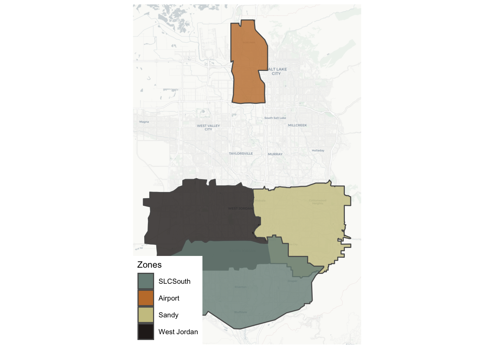

Chapter 5 Candidate Region Evaluation
5.1 Overview
We created several scenarios with microtransit fleets in various areas. A map of these areas is given below:

Figure 5.1: Ridehail zones in Salt Lake County.
The combinations of areas in each scenario is given:
TODO: add and reference that file here (it exists, just not in this repo yet)
And the results of our simulations:
## qs v0.25.4.
## ✔ skip target D
## ✔ skip target EX
## ✔ skip target B_fleet
## ✔ skip target UTAOD
## ✔ skip target A_fleet
## ✔ skip target C_fleet
## ✔ skip target D_fleet
## ✔ skip target EX_fleet
## ✔ skip target good_months
## ✔ skip target event_cols
## ✔ skip target A
## ✔ skip target B
## ✔ skip target C
## ✔ skip target fleets
## ✔ skip target UTA
## ✔ skip target scenarios
## ✔ skip target fleet_sizes
## ✔ skip target total_riders
## ✔ skip target average_wait_times
## ✔ skip target utilization
## ✔ skip target ridership_comparison
## ✔ skip target wait_time_comparison
## ✔ skip target utilization_comparison
## ✔ skip target existing_comparison
## ✔ skip target all_comparisons
## ✔ skip pipeline: 0.074 seconds## $`Existing comparison`
## # A tibble: 2 × 4
## ` ` Ridership Utilization `Avg. wait time (min)`
## <chr> <dbl> <dbl> <dbl>
## 1 UTA Observed Data 347. 2.06 11.3
## 2 BEAM 'Existing' Scenario 667 1.32 9.93
##
## $`Ridership comparison`
## # A tibble: 5 × 3
## Scenario Entering Leaving
## <chr> <int> <int>
## 1 existing 667 642
## 2 A 932 899
## 3 B 833 801
## 4 C 1079 1038
## 5 D 1571 1515
##
## $`Utilization comparison`
## # A tibble: 5 × 3
## Scenario Utilization `Fleet size`
## <chr> <dbl> <int>
## 1 existing 1.32 25
## 2 A 1.39 33
## 3 B 1.29 32
## 4 C 1.30 41
## 5 D 1.39 56
##
## $`Wait time comparison`
## # A tibble: 7 × 6
## Quantile existing A B C D
## <chr> <dbl> <dbl> <dbl> <dbl> <dbl>
## 1 0% 1.13 0.95 0.867 0.783 0.55
## 2 10% 3.67 3.53 3.37 3.31 3.47
## 3 25% 5.77 5.68 5.7 5.57 5.54
## 4 50% 9.93 9.72 10.2 9.95 9.77
## 5 75% 13.5 13.4 13.4 13.3 13.1
## 6 90% 15.5 15.5 15.5 15.6 15.4
## 7 100% 19.2 21.1 18.3 18.9 18.3